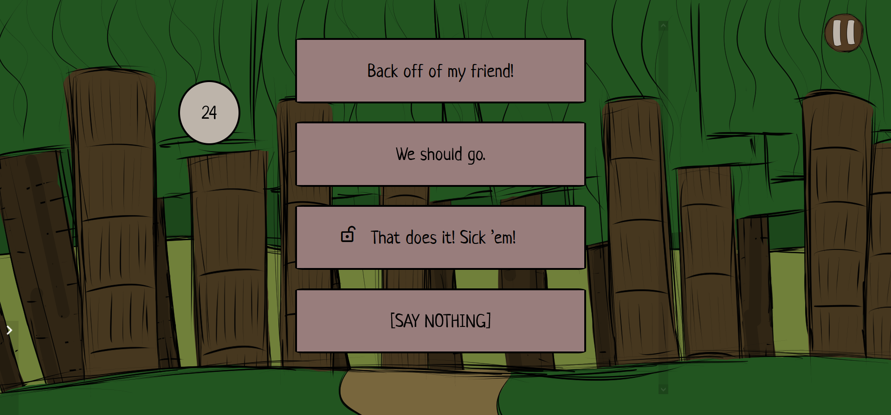
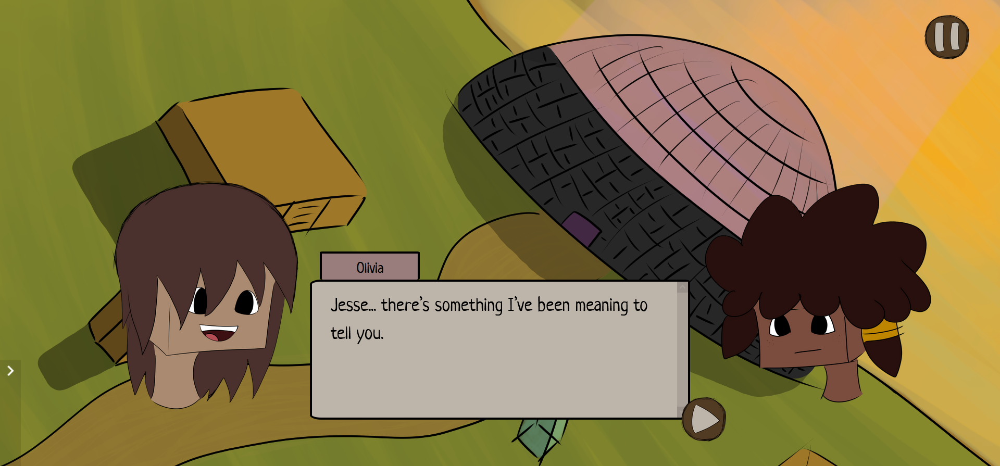
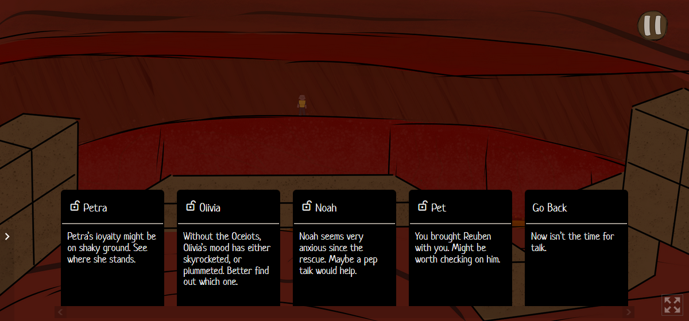

What is Nether After?
After surviving a dragon attack at an annual convention,
you and your friends will team up to escape a dangerous dimension,
and unravel a plot to destroy the memories of everyone in the world.
Nether After is an interactive fiction game (or visual novel) set in Minecraft,
where the story is tailored by how you play.
Interactive Fiction?
Interactive fiction is a genre of game that prioritizes story,
but uses interactivity to engage players. In Nether After,
this happens via timed choices, a la TellTale Games...

As you make choices, you will shape the opinions of other characters in the story,
such as whether they consider you trustworthy, or whether they will betray you.

As these opinions change, you’ll unlock unique conversations with your party.
